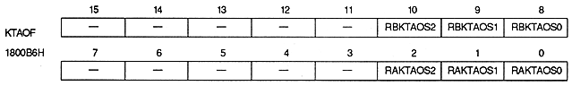

RxKMD1 | RxKMD0 | coefficient data functions | |||||||||
0 | 0 | 0 | |||||||||
0 | 1 | 1 | |||||||||
1 | 0 | 2 | |||||||||
1 | 1 | 3 |
RAKDBS | 1800B4H | bit 1 | For rotation parameter A |
RBKDBS | 1800B4H | bit 9 | For rotation parameter B |
RxKDBS | Coefficient data size |
0 | 2 words |
1 | 1 word |
RAKTE | 1800B4H | Bit 0 | For rotation parameter A |
RBKTE | 1800B4H | bit 8 | For rotation parameter B |
RxKTE | Processing |
0 | Do not use coefficient table |
1 | Use coefficient table |

Coefficient table address offset bit : Coefficient table address offset bit